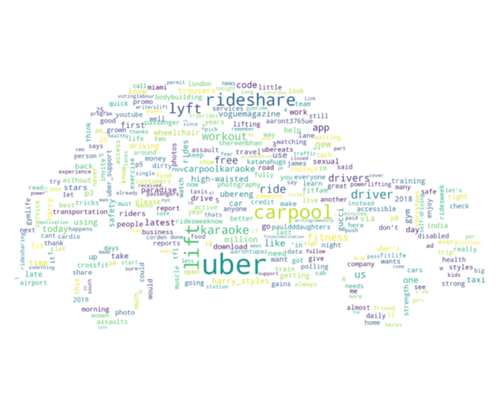

Wordcloud of User Comments from Twitter
The Twitter API only allows us to pull out tweets in the past seven days, which led to a limited result when searching for tweets related to #rideaustin. Instead, we extracted tweets that include carpool, #rideshare, #uber and #lift and gathered 4500 comments in total. We tried to filter the data with keywords Austin, but the result was still limited in amount. Therefore, this wordcloud could only show a general feedback from people all over the country toward ride hailing services. As shown in the word cloud, the most frequent words in the comments related to ride hailing include “workout”, “karaoke” and “fitness”. These results indicate that non-work purposes dominate ride hailing trips. We also did a sensitivity analysis on the text. The mean of the polarity is 0.12 with a standard deviation of 0.27, and the subjectivity is 0.36. These results show that ride hailing has become an important part in people’s daily life. Most people view ride hailing positively. However, since the positivity of ride hailing is lower than 0.5, there is still potential to improve the ride hailing service.